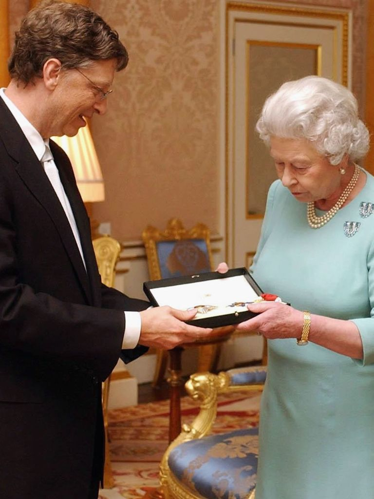

William Henry Gates
--- American business magnate
PERSONAL LIFE
Bill Gates, the renowned American entrepreneur and philanthropist, was born on October 28, 1955, in Seattle, Washington. He is the son of William H. Gates Sr. and Mary Maxwell Gates and has two sisters, Kristi and Libby. In 1975, Gates co-founded Microsoft Corporation with Paul Allen, which revolutionized the computer software industry. Apart from his professional achievements, Gates is also known for his philanthropy. In 2000, he and his then-wife Melinda established the Bill & Melinda Gates Foundation, dedicated to addressing global health issues, poverty, and education. The couple has three children together: Jennifer, Rory, and Phoebe. Over the years, Gates has shown a keen interest in various hobbies, such as reading, puzzles, and playing bridge. He has made notable real estate investments, including his well-known mansion "Xanadu 2.0" in Medina, Washington. Gates has been an advocate for global health and has actively supported efforts to combat infectious diseases. As of my last update in September 2021, he and Melinda had announced their divorce but expressed their commitment to continue their philanthropic work together through their foundation. Please note that circumstances might have changed since then, and I recommend checking more recent sources for the latest updates on Bill Gates' personal life.
"Don't compare yourself with anyone in this world ... if you do so, you are insulting yourself."
---Bill Gates.
EDUCATION
Bill Gates, the renowned co-founder of Microsoft and a prominent figure in the tech industry, attended Lakeside School, a private preparatory school in Seattle, Washington. It was at Lakeside where Gates first discovered his passion for computers and programming. After completing his high school education, Gates enrolled at Harvard University in 1973. He initially pursued a degree in law but was deeply engrossed in the burgeoning world of computing. Recognizing the potential of personal computers, Gates and his friend Paul Allen founded Microsoft in 1975, leading him to drop out of Harvard. Despite leaving college, his visionary contributions to technology revolutionized the computer industry, making him one of the wealthiest and most influential individuals globally. Throughout his career, Gates has been an advocate for education and has been actively involved in philanthropic efforts, supporting causes related to health, education, and poverty alleviation worldwide.
“It’s fine to celebrate success, but it is more important to heed the lessons of failure.”
---Bill Gates
CAREER
Bill Gates is a renowned American entrepreneur and philanthropist who co-founded Microsoft Corporation, one of the world's largest and most influential technology companies. Born on October 28, 1955, in Seattle, Washington, Gates showed an early interest and aptitude for computer programming. He attended Harvard University but dropped out in 1975 to pursue his passion for software development.
In 1975, Gates and his childhood friend Paul Allen founded Microsoft, which initially focused on developing programming languages for early microcomputers. Their big break came when they secured a contract with IBM to provide an operating system for their personal computers. Microsoft developed MS-DOS, which became the foundation for their future success.
Over the years, Gates played a pivotal role in Microsoft's growth and expansion. He was instrumental in transforming the company into a dominant force in the software industry, with products like Microsoft Windows becoming widely popular worldwide. Under his leadership as CEO and later as Chairman and Chief Software Architect, Microsoft became the world's leading software company.
In 2000, Gates stepped down as CEO to focus on his philanthropic endeavors. Along with his then-wife, Melinda Gates, he established the Bill & Melinda Gates Foundation, one of the largest charitable organizations in the world. The foundation is dedicated to addressing global health issues, reducing poverty, and expanding access to education and technology.
Throughout his career, Gates has been recognized for his visionary leadership and significant contributions to the technology sector. He has received numerous awards and honors, including being named Time magazine's Person of the Year and receiving the Presidential Medal of Freedom.
Despite his wealth and success, Gates remains committed to using his resources to make a positive impact on the world. His career is a testament to the transformative power of innovation and philanthropy, and his legacy continues to inspire aspiring entrepreneurs and philanthropists alike.

ACHIEVEMENTS
Bill Gates, co-founder of Microsoft Corporation, is renowned for his significant contributions to the technology industry and his philanthropic efforts. Throughout his career, Gates has achieved numerous accomplishments that have had a profound impact on the world.
Co-founding Microsoft: One of Gates' most notable achievements is co-founding Microsoft in 1975 with Paul Allen. Under his leadership as CEO, the company revolutionized the personal computing industry with its operating systems and software products.
Windows Operating System: Gates played a pivotal role in the development and success of the Windows operating system. Windows became the dominant platform for personal computers, shaping the way people interact with computers and drastically expanding the accessibility of computing technology.
Philanthropy: Along with his wife, Melinda Gates, Bill founded the Bill & Melinda Gates Foundation, one of the world's largest charitable organizations. The foundation has made substantial contributions to various global issues, such as eradicating infectious diseases, improving education, and supporting agricultural development in impoverished regions.
Global Health Initiatives: Through the Gates Foundation, Bill Gates has been instrumental in funding and advocating for global health initiatives. His efforts have helped combat diseases like malaria, polio, and HIV/AIDS, saving countless lives and improving healthcare systems in developing countries.
Education and Technology: Gates has been a strong advocate for education and technology in classrooms. The foundation has invested in education programs, technology integration, and innovative teaching methods, aiming to bridge the digital divide and enhance learning opportunities for students worldwide.
Climate Change: Recognizing the importance of addressing climate change, Gates has committed significant resources to research and development of clean energy technologies. He has also been vocal about the need for sustainable practices to combat environmental challenges.
Leadership in Business: As one of the world's wealthiest individuals and a successful entrepreneur, Gates' business acumen and leadership have been influential in shaping the tech industry and inspiring generations of entrepreneurs
AWARDS AND RECOGNITIONS
- He was awarded as "Presidential medal of freedom" by united states in 2016.
- He is awarded as "Time person of the year" in 1994.
- He is awarded as "Knight commander of the order of the british empire" in 2005
- He is awarded as "Bower Award for business Leadership"In 2010.
- He won "Padma Bhushan" by Govt of India in 2015.
- He won "forbes billionaire List".
“I choose a lazy person to do a hard job. Because a lazy person will find an easy way to do it.”
---Bill Gates